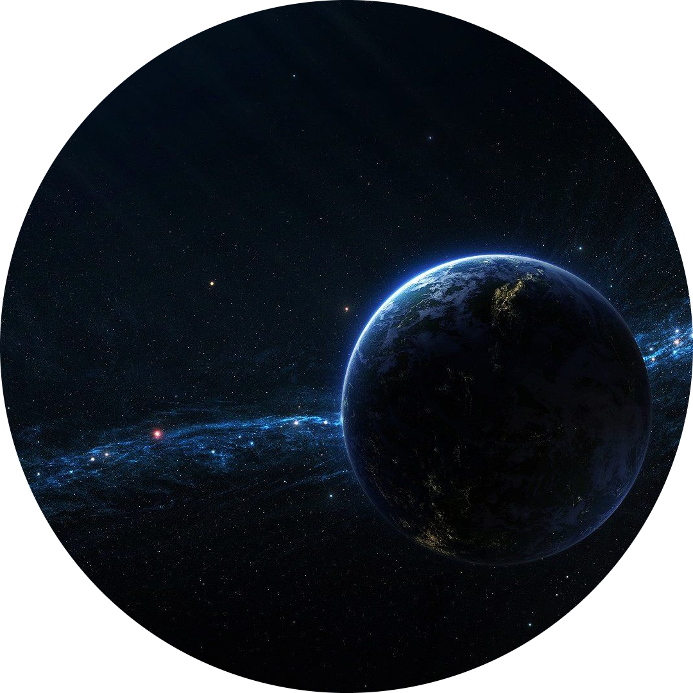

Depending on your beats per minute, your heart beats about 100,000 times a day. Though people have small blood vessels, the networking is amazingly long. To read more facts about Human-Body click Here |
The Sun is large enough that approximately 1.3 million Earths could fit inside There’s a planet made of diamonds twice the size of earth The "super earth," To read more facts about Space click Here |
 |
For my personal details click here to go onto my contact page.
Check out more facts below
| Facts About | Links |
|---|---|
| Animals | click here |
| Environment | click here |
| Food | click here |